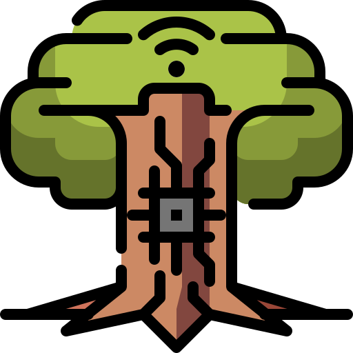
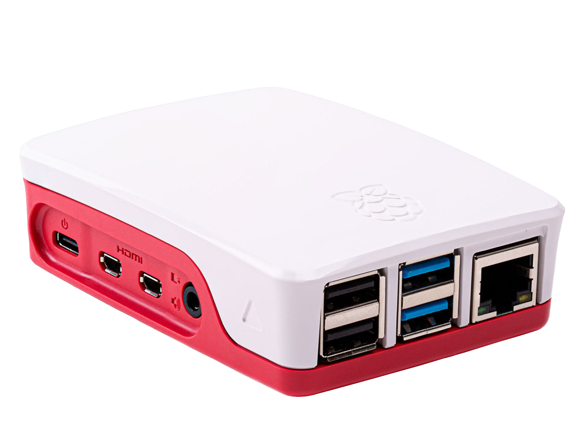

Yggdrasil
Domotics server using Home Assistant OS on a Raspberry Pi 5, each module is represented by a divinity/myth and all are linked by the tree Yggdrasil.
- personal project
- domotics
- electronics

Context
The idea started with the COVID and then was accelerated with the discovery of Birdie (the CO2 monitoring station) and reading about the effect of CO2 concentration on sleep quality, focus and decision-making ability. However, between the price for Birdie and the curiosity to understand and create a device that could tell me when to open the windows to stay alert, I started looking into creating such device and I chose to build it using Home Assistant as the backbone. It was chosen because it is quite easy to add homemade sensors using ESPHome, as well as more ready-made connected objects such as Philips Hue and other smart lights, when I will add new items to the system.
Realization
The installation of the HomeAssistant OS was very simple using the furnished tutorials, I used an external SSD flashed using the Raspberry Pi Imager that already includes the OS in its installation folder. The creation of a the home server was then a question of settings and linking to the wifi and the design of a dashboard using the tools given by HA.

Elements and materials
The list of the current elements constituting the complete system, which is evolving with time and projects
| Name | Components | Role | Reference |
|---|---|---|---|
| Yggdrasil | Raspberry Pi 5 | Orchestrates and links all devices | HA - RPi5 |
| Stribog | SCD41 sensor and ESP32C3 | CO2 sensor, notify me to open windows | Stribog |
| Demeter | Capacitive Soil Moisture and ESP32C3 | Tells me when to water my plant | Demeter |
| Mercurius | 64x32 LED Matrix, STIB API and ESP32 | Gives me next arrival of public transportation | Mercurius |
Learnings
- Home Assistant and YAML
- GitHub Repositories
- Electronics: Soldering, sensors and circuit design
- KiCad: PCB Design
- API: calls and usage of data
Future
There are a few sensors and automations that I want to add
- Finish the battery powering of Stribog
- Start Demeter project
- Install the Mercurius project (backend and data gathering are ready)
History
- October 2026
- Installation of Mercurius inside Yggdrasil, data gathered and ready to be displayed
- October 2026
- Addition of the first sensor to the system - Stribog
- September 2026
- Start of the project.